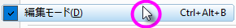

FAQ-941 セルの関数が機能しないときはどうすればよいでしょうか?
Why-are-cell-formulas-not-working
最終更新：2019/01/08
Origin 2017では(列)値の設定ダイアログボックスで列ベースの計算が使用できるスプレッドシートセル表記が導入されました。Origin 2018ではスプレッドシートのような表記法をセル式（セルレベルの計算）に拡張しました。
一部のユーザーは、GUIまたはLabTalkコマンドを使用してセル式の機能のすべてまたは一部を無効にし、それを行ったことを忘れてしまう場合があります。その後、彼らはセル式を利用しようとしてそれからそれらが機能しないことに気付きます。
スプレッドシートセル表記をワークブックで有効にする必要があります
- セル式の計算を有効にするには、スプレッドシートセル表記をワークブックで有効にする必要があります。
- Origin 2017からOrigin 2019までのバージョンでは、新しいワークブックではSCNがデフォルトでオンになっており、SCNがオンのときにこのアイコン
 がワークシートの左上隅に表示されます。Origin 2019b以降、このアイコンは非表示になっていますが、新しいワークブックではデフォルトでSCNはオンのままです。
がワークシートの左上隅に表示されます。Origin 2019b以降、このアイコンは非表示になっていますが、新しいワークブックではデフォルトでSCNはオンのままです。
- もしスプレッドシートセル表記のアイコン
 がワークブックの左上に見つからない場合は、ワークブックのタイトルバーを右クリックしてプロパティを選択します。プロパティタブで、スプレッドシートセル表記チェックボックスにチェックを入れてOKをクリックします。
がワークブックの左上に見つからない場合は、ワークブックのタイトルバーを右クリックしてプロパティを選択します。プロパティタブで、スプレッドシートセル表記チェックボックスにチェックを入れてOKをクリックします。
- スプレッドシートのセル表記は、Origin 2017以前に作成されたものであっても、どの本やプロジェクトでもオンにすることができます。ウィンドウのタイトルバーを右クリックして、プロパティを選びます。プロパティタブで、スプレッドシートセル表記チェックボックスにチェックを入れてOKをクリックします。
1冊のブックに対してスプレッドシートのセル表記を無効にし、新しいブックを含むプロジェクト内の既存のすべてのブックに対して無効にするためのLabTalk（スクリプト）メソッドがあります。こちらもご参照ください。FAQ-849: ワークブックでスプレッドシートセル表記を無効にしたり、選択して利用するにはどのようにしたらよいでしょうか？
セル式をGUIやLabTalkコマンドで制御する
Originのプロジェクトでセル式を一部または全体で無効にする方法はいくつかあります。(詳細はFAQ-939を参照してください。)
セル式をGUIで制御する
編集モードが有効になっていないことを確認します：
- メニューから編集: 編集モードを確認します。
- 編集モードの横にチェックマークがある場合は、その項目をクリックしてマークを外します。
- 
セル式をLabTalkコマンドで制御する
LabTalkのシステム変数@ESC = 1.を確認します。@ESC=0の場合、セル式(例：「=A1+B1」)は単純なテキストとして扱われ、式は解決されません。これは、ワークブックのスプレッドシートセル表記ボックスが有効になっていて、Originの編集モードが無効になっていても発生します。
- メニューからウィンドウ：スクリプトウィンドウを選択し、以下のように入力してEnterキーを押します：
@esc=
- Originが値0 (@esc=0)を返す場合は、以下のように入力してEnterキーを押します：
@esc=1
それでも@ESCが値0を返す場合は、システム変数の設定ダイアログを確認して0に設定された「ESC」項目があるかどうかをチェックします：
- メニューからPreference: システム変数を選択してシステム変数の設定ダイアログボックスを開きます。
キーワード計算、スプレッドシート、@RCN、@ESC、page.xlcolname、ClrX